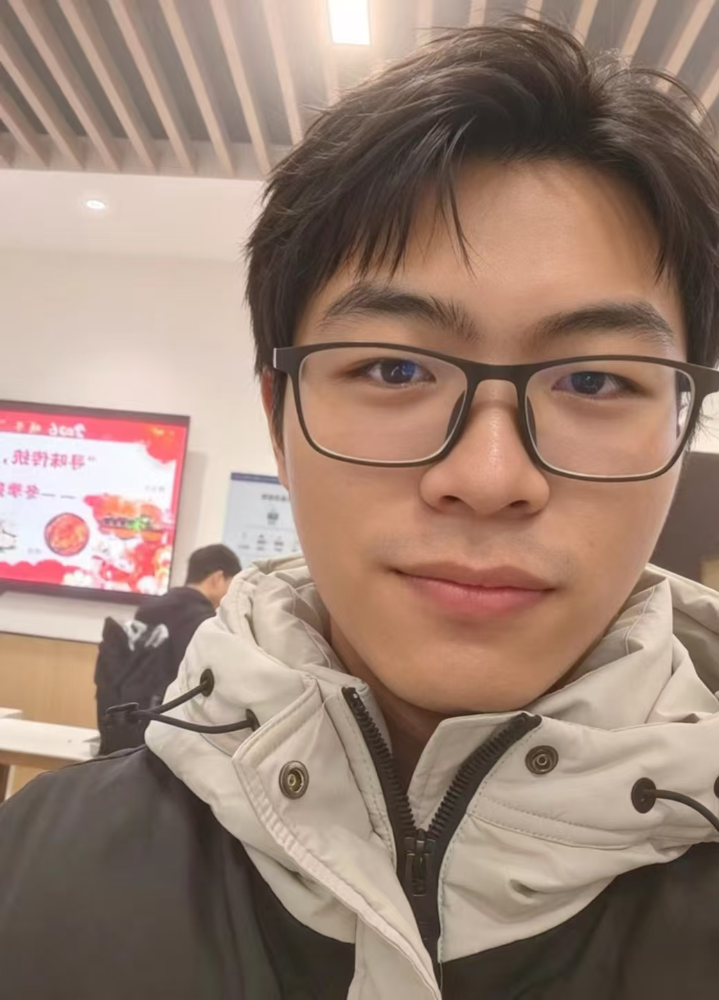

嵌入式系统、Linux开发（机器人系统, 强化学习, ROS工控系统）、智能硬件控制
熟练掌握SLAM建图以及导航技术之后，在实验室（机器人应用创新实验室-智能装备实验室研发团队（导师张雷-副教授））已有设备的基础上，不依靠单一的轮式里程计，采用GPS+IMU滤波融合的方式对移动设备进行精准定位，并结合无人机机载激光雷达对复杂起伏场地进行三维建图，并进行目标导航。同时基于机械臂逆解算，通过控制六轴机械臂实现针对上位机提供的点云数据进行叶片切割路线规划，并构建奇异点规避以及机械臂运动轨迹数据矩阵，同时完成上位机深度点云数据接口搭建。其次基于现有的风机叶片模型进行全局三维重建（基于深度相机三维SLAM建图），输出超过5000个点云数据集。目前正在接入大模型，部署VLN（视觉语言导航）。
1.创业联合创始人：前期负责前往各大医院进行呼吸病患者用户访谈，产品级桌面调研-大同呼吸医疗器械的竞品开发链路，探索医疗领域呼吸治疗器械的技术壁垒。同时拆机某大厂制氧机。2.创业团队CTO：负责整套样机开发与迭代工作，自主研发“屏障风”“循环风”模式构建，“双凤系统”风洞试验数据采集与实验场景搭建，前三代样机控制框架搭建与结构设计搭建，“双风系统”流体仿真构建等工作。目前该项目作为主要负责人已获得重庆市投资企业10w融资基金以及国家卓越工程师学院2w立项基金，已进入重庆明月湖科创基地入孵，在六月份有机会获得50w融资。预计在获得融资前产出不少于3项产品专利与科研论文。
使用yolo v5算法训练已有不同成熟度的苹果数据库，基于Gmapping自主建图算法实现已有复杂场地的SLAM自主建图，在ROS2环境下实现移动底盘的自主导航，识别到苹果物体之后依据成熟度不同开始对其进行分类。全部的算法仿真和实机部署。并且已经产出论文及专利各一项。
负责足式机器人关节结构设计，ROS环境下的腿部物理仿真及关节电机动力学控制。
基于EI会议见刊论文进行全英文现场口头学术汇报，并获得会议汇报完成证书。